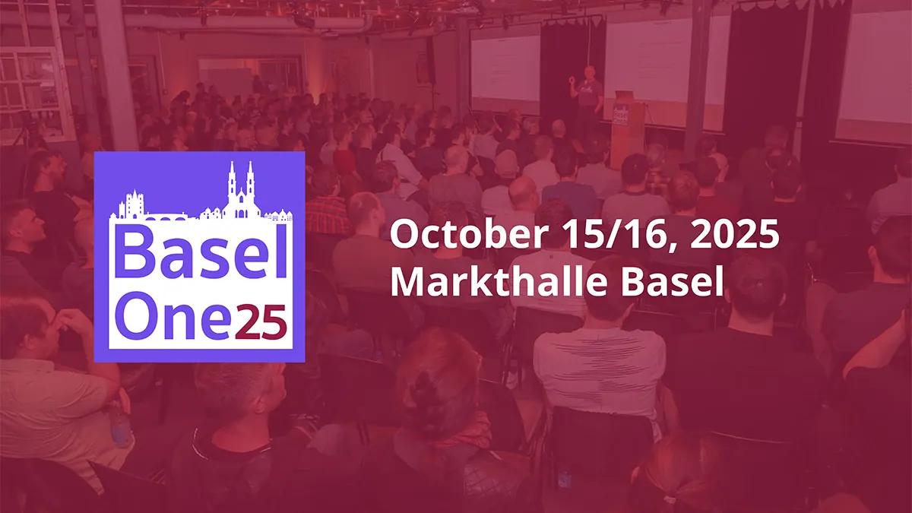
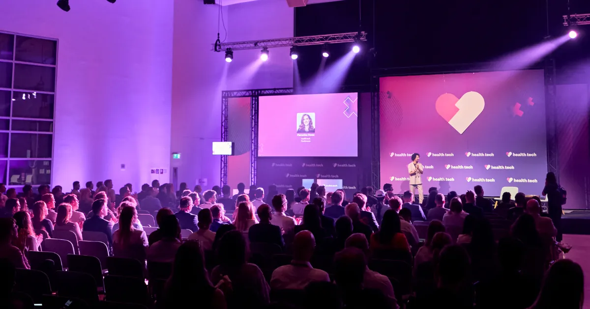
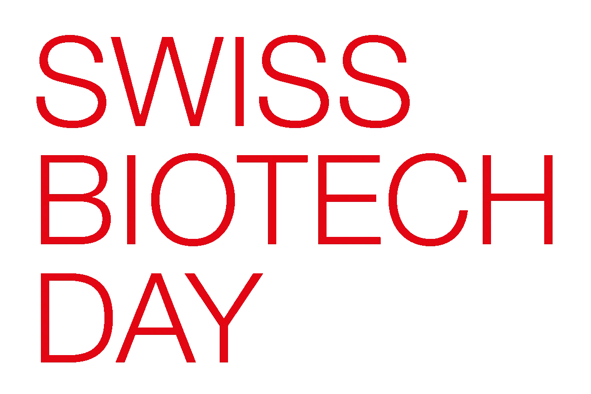

<style>
  :root {
    --paper: #f4efe2;
    --paper-2: #ebe4d2;
    --grid: #cdc4ad;
    --grid-2: #ddd4bd;
    --ink: #28231a;
    --ink-2: #6a6051;
    --ink-3: #948a77;
    --t-dev: #1f5fd4;
    --t-dev-2: #2d6fe6;
    --t-bio: #2d8659;
    --t-bio-2: #3aa06d;
    --t-hack: #c93074;
    --t-hack-2: #e34a8d;
    --t-ai: #6b4caf;
    --t-ai-2: #8463cc;
    --t-meet: #c08a1f;
    --t-meet-2: #dba03a;
    --deadline: #c43434;
  }
  .cal {
    background: var(--paper);
    color: var(--ink);
    font-family: "Inter", system-ui, -apple-system, sans-serif;
    padding: 2.5rem 2rem 4rem;
    min-height: 100vh;
    background-image:
      radial-gradient(circle at 8% 4%, rgba(196,52,52,0.04), transparent 40%),
      radial-gradient(circle at 92% 96%, rgba(31,95,212,0.04), transparent 40%);
  }
  .cal a { color: inherit; text-decoration: none; border-bottom: 1px solid currentColor; }
  .cal a:hover { color: var(--t-dev); }
  .cal .mono { font-family: "JetBrains Mono", "SF Mono", Menlo, monospace; }

  /* ─────────────── Header band ─────────────── */
  .ribbon {
    display: grid;
    grid-template-columns: 1fr auto;
    align-items: end;
    gap: 2rem;
    border-bottom: 2px solid var(--ink);
    padding-bottom: 1.25rem;
    margin-bottom: 1.5rem;
  }
  .ribbon .eyebrow {
    font-family: "JetBrains Mono", monospace;
    font-size: 0.7rem;
    letter-spacing: 0.22em;
    text-transform: uppercase;
    color: var(--ink-2);
    margin-bottom: 0.5rem;
  }
  .ribbon h1 {
    font-family: "Fraunces", "DM Serif Display", Georgia, serif;
    font-weight: 600;
    font-size: clamp(2.4rem, 5vw, 4rem);
    line-height: 1;
    letter-spacing: -0.02em;
    margin: 0;
  }
  .ribbon h1 em {
    font-style: italic;
    color: var(--t-dev);
  }
  .ribbon .year {
    font-family: "Fraunces", Georgia, serif;
    font-size: clamp(4rem, 9vw, 7rem);
    line-height: 0.8;
    font-weight: 300;
    color: var(--ink);
    text-align: right;
    letter-spacing: -0.04em;
  }
  .ribbon .year .y2 {
    display: block;
    font-size: 0.7rem;
    font-family: "JetBrains Mono", monospace;
    font-weight: 400;
    letter-spacing: 0.22em;
    color: var(--ink-2);
    margin-top: 0.4rem;
  }
  .verdict {
    background: var(--ink);
    color: var(--paper);
    padding: 1rem 1.25rem;
    margin-bottom: 1.5rem;
    display: grid;
    grid-template-columns: auto 1fr;
    align-items: center;
    gap: 1.25rem;
  }
  .verdict .pin {
    background: var(--t-dev);
    color: white;
    padding: 0.5rem 0.8rem;
    font-family: "JetBrains Mono", monospace;
    font-size: 0.7rem;
    letter-spacing: 0.18em;
    text-transform: uppercase;
  }
  .verdict p {
    margin: 0;
    font-size: 1.05rem;
    line-height: 1.5;
  }
  .verdict a { color: white; }
  .verdict strong { color: #f7d871; font-weight: 600; }

  /* ─────────────── Legend ─────────────── */
  .legend {
    display: flex;
    flex-wrap: wrap;
    gap: 0.5rem 1.5rem;
    margin-bottom: 1rem;
    padding-bottom: 0.75rem;
    border-bottom: 1px dashed var(--grid);
    font-family: "JetBrains Mono", monospace;
    font-size: 0.72rem;
    letter-spacing: 0.06em;
    color: var(--ink-2);
    text-transform: uppercase;
  }
  .legend .sw {
    display: inline-flex;
    align-items: center;
    gap: 0.5rem;
  }
  .legend .sw::before {
    content: "";
    width: 14px;
    height: 14px;
    border-radius: 2px;
    background: var(--c, var(--ink-3));
  }
  .legend .sw.dev::before    { background: var(--t-dev); }
  .legend .sw.bio::before    { background: var(--t-bio); }
  .legend .sw.hack::before   { background: var(--t-hack); }
  .legend .sw.ai::before     { background: var(--t-ai); }
  .legend .sw.meet::before   { background: var(--t-meet); }
  .legend .sw.dead::before   { background: var(--deadline); }

  /* ─────────────── Chronogram ─────────────── */
  .chronogram-wrap {
    overflow-x: auto;
    margin: 0 -2rem;
    padding: 0 2rem;
  }
  .chronogram {
    display: grid;
    grid-template-columns: 38px repeat(12, minmax(96px, 1fr));
    grid-template-rows: 30px repeat(31, 16px);
    background: var(--paper-2);
    border: 1.5px solid var(--ink);
    min-width: 1200px;
    position: relative;
  }
  .chronogram .mo {
    grid-row: 1;
    font-family: "JetBrains Mono", monospace;
    font-size: 0.72rem;
    letter-spacing: 0.14em;
    text-transform: uppercase;
    color: var(--ink);
    padding: 0.6rem 0.7rem 0;
    border-left: 1px solid var(--grid);
    border-bottom: 1.5px solid var(--ink);
    font-weight: 600;
  }
  .chronogram .mo .qtr {
    color: var(--ink-3);
    font-weight: 400;
    margin-left: 0.4rem;
    font-size: 0.62rem;
  }
  .chronogram .corner {
    grid-row: 1;
    grid-column: 1;
    border-bottom: 1.5px solid var(--ink);
    background: var(--paper);
  }
  .chronogram .daylabel {
    grid-column: 1;
    font-family: "JetBrains Mono", monospace;
    font-size: 0.62rem;
    color: var(--ink-3);
    text-align: right;
    padding-right: 0.4rem;
    border-right: 1px solid var(--grid);
    line-height: 16px;
    background: var(--paper);
  }
  .chronogram .col {
    border-left: 1px solid var(--grid);
    grid-row: 2 / -1;
    position: relative;
    background:
      repeating-linear-gradient(
        to bottom,
        transparent 0,
        transparent 79px,
        rgba(0,0,0,0.04) 79px,
        rgba(0,0,0,0.04) 80px
      );
  }
  /* Quarter dividers */
  .chronogram .col.q-start { border-left: 2px solid var(--ink-2); }
  /* Position event tiles directly into chronogram via grid-column + grid-row */
  .tile {
    margin: 1px 3px;
    padding: 6px 8px 5px;
    border-radius: 3px;
    color: white;
    font-size: 0.7rem;
    line-height: 1.15;
    overflow: hidden;
    display: flex;
    flex-direction: column;
    justify-content: flex-start;
    position: relative;
    box-shadow: 0 1px 0 rgba(0,0,0,0.15);
    border-left: 3px solid rgba(255,255,255,0.4);
    font-family: "Inter", sans-serif;
  }
  .tile a { color: white; border-bottom-color: rgba(255,255,255,0.5); }
  .tile .name {
    font-weight: 700;
    font-size: 0.82rem;
    letter-spacing: -0.005em;
    line-height: 1.12;
    margin-bottom: 3px;
  }
  .tile .meta {
    font-family: "JetBrains Mono", monospace;
    font-size: 0.62rem;
    letter-spacing: 0.04em;
    opacity: 0.92;
    line-height: 1.25;
  }
  .tile .venue {
    font-size: 0.62rem;
    opacity: 0.85;
    margin-top: auto;
    padding-top: 4px;
    font-style: italic;
  }
  .tile.t-dev  { background: linear-gradient(155deg, var(--t-dev-2), var(--t-dev)); }
  .tile.t-bio  { background: linear-gradient(155deg, var(--t-bio-2), var(--t-bio)); }
  .tile.t-hack { background: linear-gradient(155deg, var(--t-hack-2), var(--t-hack)); }
  .tile.t-ai   { background: linear-gradient(155deg, var(--t-ai-2), var(--t-ai)); }
  .tile.flag {
    position: absolute;
    top: 3px;
    right: 4px;
    background: rgba(255,255,255,0.95);
    color: var(--ink);
    font-family: "JetBrains Mono", monospace;
    font-size: 0.55rem;
    padding: 1px 4px;
    border-radius: 2px;
    letter-spacing: 0.08em;
    font-weight: 700;
  }
  .tile.t-dev .flag { color: var(--t-dev); }
  .deadline-marker {
    background: var(--deadline);
    color: white;
    margin: 0 3px;
    padding: 2px 6px;
    border-radius: 2px;
    font-family: "JetBrains Mono", monospace;
    font-size: 0.6rem;
    letter-spacing: 0.05em;
    display: flex;
    align-items: center;
    gap: 6px;
    line-height: 1;
    box-shadow: 0 1px 0 rgba(0,0,0,0.2);
    z-index: 2;
  }
  .deadline-marker::before {
    content: "▲";
    font-size: 0.55rem;
  }
  .chronogram-foot {
    display: flex;
    justify-content: space-between;
    font-family: "JetBrains Mono", monospace;
    font-size: 0.62rem;
    color: var(--ink-3);
    letter-spacing: 0.14em;
    text-transform: uppercase;
    padding-top: 0.6rem;
    margin-bottom: 2.5rem;
  }

  /* ─────────────── Meetups heartbeat ─────────────── */
  h2.sec {
    font-family: "JetBrains Mono", monospace;
    font-size: 0.7rem;
    letter-spacing: 0.22em;
    text-transform: uppercase;
    color: var(--ink-2);
    border-top: 1.5px solid var(--ink);
    padding-top: 0.8rem;
    margin: 2.5rem 0 1rem;
    font-weight: 600;
  }
  h2.sec .qty {
    color: var(--ink-3);
    margin-left: 0.4rem;
    font-weight: 400;
  }
  .heartbeat {
    background: var(--paper-2);
    border: 1.5px solid var(--ink);
    padding: 0;
    overflow-x: auto;
  }
  .heartbeat table {
    width: 100%;
    border-collapse: collapse;
    font-family: "Inter", sans-serif;
    min-width: 760px;
  }
  .heartbeat th, .heartbeat td {
    padding: 8px 6px;
    text-align: center;
    font-size: 0.7rem;
    font-family: "JetBrains Mono", monospace;
    border-bottom: 1px solid var(--grid);
    border-right: 1px solid var(--grid-2);
  }
  .heartbeat thead th {
    color: var(--ink);
    letter-spacing: 0.14em;
    text-transform: uppercase;
    background: var(--paper);
    font-size: 0.62rem;
    border-bottom: 1.5px solid var(--ink);
  }
  .heartbeat td:first-child, .heartbeat th:first-child {
    text-align: left;
    padding-left: 12px;
    font-family: "Inter", sans-serif;
    text-transform: none;
    letter-spacing: 0;
    font-size: 0.82rem;
    border-right: 1.5px solid var(--ink);
    width: 200px;
  }
  .heartbeat td:first-child a { border-bottom: 1px dotted var(--ink-2); }
  .heartbeat .members {
    font-family: "JetBrains Mono", monospace;
    font-size: 0.62rem;
    color: var(--ink-3);
    margin-left: 8px;
  }
  .heartbeat tbody tr:last-child td { border-bottom: none; }
  .heartbeat .pulse {
    display: inline-block;
    width: 10px;
    height: 10px;
    border-radius: 50%;
    background: var(--t-meet);
    vertical-align: middle;
    box-shadow: 0 0 0 2px rgba(192,138,31,0.18);
  }
  .heartbeat .pulse.sporadic { background: rgba(192,138,31,0.35); box-shadow: none; }
  .heartbeat .pulse.dead {
    background: transparent;
    border: 1px dashed var(--ink-3);
    box-shadow: none;
  }
  .heartbeat .row-active td:first-child { color: var(--ink); }
  .heartbeat .row-dead td:first-child { color: var(--ink-3); }
  .heartbeat .status {
    font-family: "JetBrains Mono", monospace;
    font-size: 0.6rem;
    letter-spacing: 0.12em;
    text-transform: uppercase;
    padding: 2px 6px;
    border-radius: 2px;
    margin-left: 8px;
    font-weight: 600;
  }
  .heartbeat .status.active   { background: var(--t-bio); color: white; }
  .heartbeat .status.sporadic { background: var(--t-meet); color: white; }
  .heartbeat .status.dormant  { background: transparent; color: var(--ink-3); border: 1px solid var(--ink-3); }

  /* ─────────────── Two-up callouts ─────────────── */
  .callouts {
    display: grid;
    grid-template-columns: 1.3fr 1fr;
    gap: 1.5rem;
    margin: 2.5rem 0;
  }
  .callout {
    border: 1.5px solid var(--ink);
    padding: 1.5rem 1.5rem 1.25rem;
    background: var(--paper-2);
    position: relative;
  }
  .callout.flag-c {
    background: var(--ink);
    color: var(--paper);
  }
  .callout.flag-c a { color: var(--paper); }
  .callout .label {
    font-family: "JetBrains Mono", monospace;
    font-size: 0.62rem;
    letter-spacing: 0.22em;
    text-transform: uppercase;
    color: var(--ink-3);
    margin-bottom: 0.5rem;
  }
  .callout.flag-c .label { color: #f7d871; }
  .callout h3 {
    font-family: "Fraunces", Georgia, serif;
    font-size: 1.45rem;
    margin: 0 0 0.6rem;
    line-height: 1.1;
    font-weight: 600;
    letter-spacing: -0.01em;
  }
  .callout p {
    margin: 0 0 0.6rem;
    line-height: 1.5;
    font-size: 0.92rem;
  }
  .callout .when {
    font-family: "JetBrains Mono", monospace;
    font-size: 1.2rem;
    font-weight: 700;
    color: var(--deadline);
    margin: 0.5rem 0;
    letter-spacing: -0.01em;
  }
  .callout.flag-c .when { color: #f7d871; }

  /* ─────────────── Photo strip ─────────────── */
  .photo-strip {
    display: grid;
    grid-template-columns: repeat(4, 1fr);
    gap: 0.75rem;
    margin: 2rem 0;
  }
  .photo {
    aspect-ratio: 4/3;
    background: var(--paper-2);
    border: 1px solid var(--grid);
    overflow: hidden;
    position: relative;
  }
  .photo img {
    width: 100%;
    height: 100%;
    object-fit: cover;
    display: block;
  }
  .photo .cap {
    position: absolute;
    left: 0; right: 0; bottom: 0;
    background: linear-gradient(to top, rgba(0,0,0,0.78), transparent);
    color: white;
    font-family: "JetBrains Mono", monospace;
    font-size: 0.62rem;
    letter-spacing: 0.12em;
    text-transform: uppercase;
    padding: 20px 10px 8px;
  }
  .photo .badge {
    position: absolute;
    top: 8px;
    left: 8px;
    background: white;
    color: var(--ink);
    font-family: "JetBrains Mono", monospace;
    font-size: 0.58rem;
    letter-spacing: 0.1em;
    text-transform: uppercase;
    padding: 2px 6px;
    border-radius: 2px;
    font-weight: 700;
  }
  .photo.contain { background: white; }
  .photo.contain img { object-fit: contain; padding: 8%; }

  /* ─────────────── Adjacent strip ─────────────── */
  .adjacent {
    display: grid;
    grid-template-columns: 1fr 1fr 1fr;
    gap: 1rem;
    margin: 1.5rem 0 2.5rem;
  }
  .adj {
    background: var(--paper-2);
    border-left: 3px solid var(--ink-2);
    padding: 0.9rem 1rem;
  }
  .adj .k {
    font-family: "JetBrains Mono", monospace;
    font-size: 0.6rem;
    letter-spacing: 0.18em;
    text-transform: uppercase;
    color: var(--ink-3);
    margin-bottom: 0.3rem;
  }
  .adj h4 {
    margin: 0 0 0.3rem;
    font-size: 0.95rem;
    font-weight: 600;
  }
  .adj p {
    margin: 0;
    font-size: 0.78rem;
    line-height: 1.45;
    color: var(--ink-2);
  }

  /* ─────────────── Outside Basel ─────────────── */
  .outside {
    background: var(--paper-2);
    border: 1.5px solid var(--ink);
    border-style: dashed;
    padding: 1.5rem 1.5rem 1.25rem;
    margin: 2rem 0;
  }
  .outside h3 {
    font-family: "Fraunces", Georgia, serif;
    font-size: 1.3rem;
    margin: 0 0 0.5rem;
    font-weight: 600;
  }
  .outside .label {
    font-family: "JetBrains Mono", monospace;
    font-size: 0.62rem;
    letter-spacing: 0.22em;
    text-transform: uppercase;
    color: var(--deadline);
    margin-bottom: 0.4rem;
  }
  .outside ul {
    margin: 0.6rem 0 0;
    padding-left: 1.2rem;
    font-size: 0.92rem;
    line-height: 1.6;
  }
  .outside li { margin-bottom: 0.3rem; }
  .outside .gap {
    font-family: "JetBrains Mono", monospace;
    font-size: 0.7rem;
    color: var(--ink-2);
    margin-right: 0.5rem;
  }

  /* ─────────────── Sources strip ─────────────── */
  .src-list {
    display: grid;
    grid-template-columns: repeat(auto-fill, minmax(220px, 1fr));
    gap: 0.5rem;
    margin-bottom: 2rem;
  }
  .src {
    display: flex;
    align-items: center;
    gap: 0.6rem;
    padding: 0.55rem 0.7rem;
    background: var(--paper-2);
    border: 1px solid var(--grid);
    font-size: 0.78rem;
    line-height: 1.2;
    border-bottom: none;
  }
  .src:hover { background: white; }
  .src img {
    width: 18px; height: 18px;
    flex-shrink: 0;
  }
  .src .n {
    font-family: "JetBrains Mono", monospace;
    font-size: 0.6rem;
    color: var(--ink-3);
    flex-shrink: 0;
  }
  .src .t {
    flex: 1;
    color: var(--ink);
    overflow: hidden;
    white-space: nowrap;
    text-overflow: ellipsis;
  }

  /* ─────────────── Sibling nav ─────────────── */
  .siblings {
    display: grid;
    grid-template-columns: 1fr 1fr;
    gap: 1rem;
    margin: 2rem 0 1rem;
  }
  .sib {
    border: 1px solid var(--grid);
    padding: 1rem 1.25rem;
    background: var(--paper-2);
    border-bottom: none;
  }
  .sib:hover { background: white; }
  .sib .k {
    font-family: "JetBrains Mono", monospace;
    font-size: 0.6rem;
    letter-spacing: 0.18em;
    text-transform: uppercase;
    color: var(--ink-3);
    margin-bottom: 0.3rem;
  }
  .sib h4 {
    margin: 0 0 0.4rem;
    font-family: "Fraunces", Georgia, serif;
    font-size: 1.1rem;
    color: var(--ink);
    font-weight: 600;
  }
  .sib p {
    margin: 0;
    font-size: 0.82rem;
    color: var(--ink-2);
    line-height: 1.45;
  }
  .parent-link {
    text-align: center;
    margin: 2rem 0 0.5rem;
    font-family: "JetBrains Mono", monospace;
    font-size: 0.7rem;
    letter-spacing: 0.18em;
    text-transform: uppercase;
    color: var(--ink-3);
  }
  .parent-link a {
    color: var(--ink);
    border-bottom: 1px solid var(--ink);
  }

  .colophon {
    text-align: center;
    font-family: "JetBrains Mono", monospace;
    font-size: 0.62rem;
    color: var(--ink-3);
    letter-spacing: 0.16em;
    text-transform: uppercase;
    margin-top: 2.5rem;
    padding-top: 1.5rem;
    border-top: 1px dashed var(--grid);
  }

  @media (max-width: 760px) {
    .ribbon { grid-template-columns: 1fr; }
    .ribbon .year { text-align: left; }
    .callouts { grid-template-columns: 1fr; }
    .adjacent { grid-template-columns: 1fr; }
    .photo-strip { grid-template-columns: 1fr 1fr; }
    .siblings { grid-template-columns: 1fr; }
  }
</style>

<section class="cal">

  <!-- Header ribbon -->
  <header class="ribbon">
    <div>
      <div class="eyebrow">Basel · year at a glance · scout chronogram</div>
      <h1>Basel's tech<br>year, on <em>one wall</em>.</h1>
    </div>
    <div class="year">26<span class="y2">A.D. MMXXVI</span></div>
  </header>

  <!-- The single verdict -->
  <div class="verdict">
    <div class="pin">PIN THIS</div>
    <p>If you want a <strong>pure software-development</strong> conference in Basel, there is exactly one: <a href="https://baselone.org/en/baselone-home/">BaselOne</a> on <strong>14–15 October 2026</strong> at Markthalle <sup><a href="https://baselone.org/en/baselone-home/">[1]</a></sup>. Everything else on this calendar is life-sciences-adjacent.</p>
  </div>

  <!-- Legend -->
  <div class="legend">
    <span class="sw dev">Software dev</span>
    <span class="sw bio">Life sciences / biotech</span>
    <span class="sw hack">Hackathon</span>
    <span class="sw ai">AI in health</span>
    <span class="sw meet">Recurring meetup</span>
    <span class="sw dead">Adjacent deadline</span>
  </div>

  <!-- ─────────────── CHRONOGRAM ─────────────── -->
  <div class="chronogram-wrap">
    <div class="chronogram" role="grid" aria-label="2026 Basel tech calendar — months across, days down">

      <!-- Corner cell -->
      <div class="corner"></div>

      <!-- Month headers -->
      <div class="mo" style="grid-column:2">JAN <span class="qtr">Q1</span></div>
      <div class="mo" style="grid-column:3">FEB</div>
      <div class="mo" style="grid-column:4">MAR</div>
      <div class="mo" style="grid-column:5">APR <span class="qtr">Q2</span></div>
      <div class="mo" style="grid-column:6">MAY</div>
      <div class="mo" style="grid-column:7">JUN</div>
      <div class="mo" style="grid-column:8">JUL <span class="qtr">Q3</span></div>
      <div class="mo" style="grid-column:9">AUG</div>
      <div class="mo" style="grid-column:10">SEP</div>
      <div class="mo" style="grid-column:11">OCT <span class="qtr">Q4</span></div>
      <div class="mo" style="grid-column:12">NOV</div>
      <div class="mo" style="grid-column:13">DEC</div>

      <!-- Day labels (sparse — every 5 days) -->
      <div class="daylabel" style="grid-row:2">1</div>
      <div class="daylabel" style="grid-row:6">5</div>
      <div class="daylabel" style="grid-row:11">10</div>
      <div class="daylabel" style="grid-row:16">15</div>
      <div class="daylabel" style="grid-row:21">20</div>
      <div class="daylabel" style="grid-row:26">25</div>
      <div class="daylabel" style="grid-row:31">30</div>

      <!-- Empty fill day-label cells so the right border draws cleanly -->
      <div class="daylabel" style="grid-row:3"></div>
      <div class="daylabel" style="grid-row:4"></div>
      <div class="daylabel" style="grid-row:5"></div>
      <div class="daylabel" style="grid-row:7"></div>
      <div class="daylabel" style="grid-row:8"></div>
      <div class="daylabel" style="grid-row:9"></div>
      <div class="daylabel" style="grid-row:10"></div>
      <div class="daylabel" style="grid-row:12"></div>
      <div class="daylabel" style="grid-row:13"></div>
      <div class="daylabel" style="grid-row:14"></div>
      <div class="daylabel" style="grid-row:15"></div>
      <div class="daylabel" style="grid-row:17"></div>
      <div class="daylabel" style="grid-row:18"></div>
      <div class="daylabel" style="grid-row:19"></div>
      <div class="daylabel" style="grid-row:20"></div>
      <div class="daylabel" style="grid-row:22"></div>
      <div class="daylabel" style="grid-row:23"></div>
      <div class="daylabel" style="grid-row:24"></div>
      <div class="daylabel" style="grid-row:25"></div>
      <div class="daylabel" style="grid-row:27"></div>
      <div class="daylabel" style="grid-row:28"></div>
      <div class="daylabel" style="grid-row:29"></div>
      <div class="daylabel" style="grid-row:30"></div>
      <div class="daylabel" style="grid-row:32"></div>

      <!-- Month columns (background grid + dividers) -->
      <div class="col q-start" style="grid-column:2"></div>
      <div class="col"         style="grid-column:3"></div>
      <div class="col"         style="grid-column:4"></div>
      <div class="col q-start" style="grid-column:5"></div>
      <div class="col"         style="grid-column:6"></div>
      <div class="col"         style="grid-column:7"></div>
      <div class="col q-start" style="grid-column:8"></div>
      <div class="col"         style="grid-column:9"></div>
      <div class="col"         style="grid-column:10"></div>
      <div class="col q-start" style="grid-column:11"></div>
      <div class="col"         style="grid-column:12"></div>
      <div class="col"         style="grid-column:13"></div>

      <!-- ─── Event tiles ─── -->

      <!-- health.tech | Mar 3-5 | Messe Basel -->
      <div class="tile t-bio" style="grid-column:4; grid-row:4 / 7">
        <span class="name"><a href="https://www.health.tech/">health.tech</a></span>
        <span class="meta">3–5 MAR · 5,000+</span>
        <span class="venue">Messe Basel</span>
      </div>

      <!-- Swiss Biotech Day | May 4-5 | Messeplatz -->
      <div class="tile t-bio" style="grid-column:6; grid-row:5 / 7">
        <span class="name"><a href="https://swissbiotechday.ch/">Swiss Biotech Day</a></span>
        <span class="meta">4–5 MAY · 3,500+ · 58 countries</span>
      </div>

      <!-- Future Labs Live | May 27-28 -->
      <div class="tile t-bio" style="grid-column:6; grid-row:28 / 30">
        <span class="name"><a href="https://www.terrapinn.com/conference/future-labs-live/index.stm">Future Labs Live</a></span>
        <span class="meta">27–28 MAY · AI/ML, lab automation</span>
      </div>

      <!-- Stucki deadline marker (from parent context) Sep 26 -->
      <div class="deadline-marker" style="grid-column:10; grid-row:27 / 28">
        26 SEP · STUCKI LAST SERVICE
      </div>

      <!-- BioTechX Europe | Oct 6-8 -->
      <div class="tile t-bio" style="grid-column:11; grid-row:7 / 10">
        <span class="name"><a href="https://www.terrapinn.com/conference/biotechx/index.stm">BioTechX Europe</a></span>
        <span class="meta">6–8 OCT · 3,000+ · 400 spkrs</span>
        <span class="venue">"Data. AI. Discovery."</span>
      </div>

      <!-- BaselOne | Oct 14-15 — the pin -->
      <div class="tile t-dev" style="grid-column:11; grid-row:15 / 17">
        <span class="flag">PIN</span>
        <span class="name"><a href="https://baselone.org/en/baselone-home/">BaselOne</a></span>
        <span class="meta">14–15 OCT · 310+ in 2025 · Markthalle</span>
      </div>

      <!-- BaselHack | Oct 30 – Nov 1 (Oct half) -->
      <div class="tile t-hack" style="grid-column:11; grid-row:31 / 33">
        <span class="name"><a href="https://www.baselhack.ch/">BaselHack</a></span>
        <span class="meta">30 OCT → 1 NOV · 48hr · ~120</span>
      </div>

      <!-- BaselHack | Nov tail -->
      <div class="tile t-hack" style="grid-column:12; grid-row:2 / 3" title="continues from 30 Oct">
        <span class="meta" style="font-weight:700">↳ BaselHack</span>
      </div>

      <!-- aiHealth2026 | Nov 10-11 -->
      <div class="tile t-ai" style="grid-column:12; grid-row:11 / 13">
        <span class="name"><a href="https://ai-health2026.com/">aiHealth2026</a></span>
        <span class="meta">10–11 NOV · FHNW Muttenz</span>
      </div>

    </div>
  </div>

  <div class="chronogram-foot">
    <span>← Q1 quiet</span>
    <span>Q4 = three conferences in 25 days</span>
    <span>Dec dark →</span>
  </div>

  <!-- ─────────────── HEARTBEAT ─────────────── -->
  <h2 class="sec">Meetup heartbeat <span class="qty">— monthly cadence, 7 groups, only 2 alive</span></h2>

  <div class="heartbeat">
    <table>
      <thead>
        <tr>
          <th>Group</th>
          <th>J</th><th>F</th><th>M</th><th>A</th><th>M</th><th>J</th><th>J</th><th>A</th><th>S</th><th>O</th><th>N</th><th>D</th>
          <th style="border-left:1.5px solid var(--ink); width:120px">Status</th>
        </tr>
      </thead>
      <tbody>
        <tr class="row-active">
          <td><a href="https://www.meetup.com/hackergarten-basel/">Hackergarten Basel</a><span class="members">863 mem</span></td>
          <td><span class="pulse"></span></td><td><span class="pulse"></span></td>
          <td><span class="pulse"></span></td><td><span class="pulse"></span></td>
          <td><span class="pulse"></span></td><td><span class="pulse"></span></td>
          <td><span class="pulse"></span></td><td><span class="pulse"></span></td>
          <td><span class="pulse"></span></td><td><span class="pulse"></span></td>
          <td><span class="pulse"></span></td><td><span class="pulse"></span></td>
          <td style="border-left:1.5px solid var(--ink)"><span class="status active">Active</span></td>
        </tr>
        <tr class="row-active">
          <td><a href="https://www.meetup.com/basel-data-scientists/">Basel Data Science &amp; AI</a><span class="members">641 mem</span></td>
          <td><span class="pulse"></span></td><td><span class="pulse"></span></td>
          <td><span class="pulse"></span></td><td><span class="pulse"></span></td>
          <td><span class="pulse"></span></td><td><span class="pulse"></span></td>
          <td><span class="pulse"></span></td><td><span class="pulse"></span></td>
          <td><span class="pulse"></span></td><td><span class="pulse"></span></td>
          <td><span class="pulse"></span></td><td><span class="pulse"></span></td>
          <td style="border-left:1.5px solid var(--ink)"><span class="status active">Active</span></td>
        </tr>
        <tr>
          <td><a href="https://www.meetup.com/basel-js/">basel.js</a><span class="members">440 mem</span></td>
          <td><span class="pulse dead"></span></td><td><span class="pulse dead"></span></td>
          <td><span class="pulse dead"></span></td><td><span class="pulse dead"></span></td>
          <td><span class="pulse sporadic"></span></td><td><span class="pulse dead"></span></td>
          <td><span class="pulse dead"></span></td><td><span class="pulse dead"></span></td>
          <td><span class="pulse sporadic"></span></td><td><span class="pulse dead"></span></td>
          <td><span class="pulse dead"></span></td><td><span class="pulse dead"></span></td>
          <td style="border-left:1.5px solid var(--ink)"><span class="status sporadic">Sporadic</span></td>
        </tr>
        <tr class="row-dead">
          <td><a href="https://www.meetup.com/web-enthusiasts-basel/">Web Enthusiasts Basel</a><span class="members">235 mem</span></td>
          <td><span class="pulse dead"></span></td><td><span class="pulse dead"></span></td>
          <td><span class="pulse dead"></span></td><td><span class="pulse dead"></span></td>
          <td><span class="pulse dead"></span></td><td><span class="pulse dead"></span></td>
          <td><span class="pulse dead"></span></td><td><span class="pulse dead"></span></td>
          <td><span class="pulse dead"></span></td><td><span class="pulse dead"></span></td>
          <td><span class="pulse dead"></span></td><td><span class="pulse dead"></span></td>
          <td style="border-left:1.5px solid var(--ink)"><span class="status dormant">last Mar '24</span></td>
        </tr>
        <tr class="row-dead">
          <td><a href="https://www.meetup.com/pydata-basel/">PyData Basel</a><span class="members">179 mem</span></td>
          <td><span class="pulse dead"></span></td><td><span class="pulse dead"></span></td>
          <td><span class="pulse dead"></span></td><td><span class="pulse dead"></span></td>
          <td><span class="pulse dead"></span></td><td><span class="pulse dead"></span></td>
          <td><span class="pulse dead"></span></td><td><span class="pulse dead"></span></td>
          <td><span class="pulse dead"></span></td><td><span class="pulse dead"></span></td>
          <td><span class="pulse dead"></span></td><td><span class="pulse dead"></span></td>
          <td style="border-left:1.5px solid var(--ink)"><span class="status dormant">last Oct '23</span></td>
        </tr>
        <tr class="row-dead">
          <td><a href="https://www.meetup.com/vue-basel/">Vue Basel</a><span class="members">346 mem</span></td>
          <td><span class="pulse dead"></span></td><td><span class="pulse dead"></span></td>
          <td><span class="pulse dead"></span></td><td><span class="pulse dead"></span></td>
          <td><span class="pulse dead"></span></td><td><span class="pulse dead"></span></td>
          <td><span class="pulse dead"></span></td><td><span class="pulse dead"></span></td>
          <td><span class="pulse dead"></span></td><td><span class="pulse dead"></span></td>
          <td><span class="pulse dead"></span></td><td><span class="pulse dead"></span></td>
          <td style="border-left:1.5px solid var(--ink)"><span class="status dormant">last Jul '22</span></td>
        </tr>
        <tr class="row-dead">
          <td><a href="https://www.meetup.com/pybasel-basel-python-meetup/">PyBasel</a><span class="members">391 mem</span></td>
          <td><span class="pulse dead"></span></td><td><span class="pulse dead"></span></td>
          <td><span class="pulse dead"></span></td><td><span class="pulse dead"></span></td>
          <td><span class="pulse dead"></span></td><td><span class="pulse dead"></span></td>
          <td><span class="pulse dead"></span></td><td><span class="pulse dead"></span></td>
          <td><span class="pulse dead"></span></td><td><span class="pulse dead"></span></td>
          <td><span class="pulse dead"></span></td><td><span class="pulse dead"></span></td>
          <td style="border-left:1.5px solid var(--ink)"><span class="status dormant">last Sep '18</span></td>
        </tr>
      </tbody>
    </table>
  </div>

  <!-- ─────────────── TWO-UP CALLOUTS ─────────────── -->
  <div class="callouts">
    <div class="callout flag-c">
      <div class="label">If you fly in for one thing</div>
      <h3>BaselOne is the pin.</h3>
      <p>Vendor-independent, committee-curated, EN/DE talks at the Markthalle (2 min from Basel SBB). The 2025 edition pulled 310+ attendees from IT, pharma, insurance, banking and retail across CH/DE/FR — multi-industry, not pure-FAANG <sup><a href="https://baselone.org/en/baselone-home/">[1]</a></sup>. Organised by <a href="https://karakun.com/">Karakun</a>, <a href="https://www.betterask.erni/">ERNI Schweiz</a>, IT-S Kanton Basel-Stadt and <a href="https://www.baloise.com/">Helvetia Baloise</a> <sup><a href="https://baselone.org/en/about-us/">[18]</a></sup>.</p>
      <p style="font-size:0.78rem; opacity:0.75; margin-top:0.8rem">CfP closed 30 Apr 2026 via Sessionize <sup><a href="https://sessionize.com/baselone-2026/">[2]</a></sup>.</p>
      <div class="when">14–15 OCT 2026</div>
    </div>

    <div class="callout">
      <div class="label">Cross-angle collision</div>
      <h3>The 26 Sept deadline.</h3>
      <p>If you're piggybacking a tech trip onto a Michelin dinner, the BaselOne weekend (mid-Oct) <strong>cannot include <a href="../../michelin-2-and-3-star-restaurants-in-basel/">Stucki</a></strong> — Stucki's last service before its 13-month renovation is 26 September. For a conference-driven trip, Cheval Blanc or Roots are the candidates.</p>
      <div class="when">Stucki dark 27 Sep '26 → 1 Feb '27</div>
    </div>
  </div>

  <!-- ─────────────── PHOTO STRIP ─────────────── -->
  <h2 class="sec">Conference faces</h2>
  <div class="photo-strip">
    <a class="photo" href="https://baselone.org/en/baselone-home/">
      
      <div class="badge">14–15 OCT</div>
      <div class="cap">BaselOne · Markthalle</div>
    </a>
    <a class="photo" href="https://www.health.tech/">
      
      <div class="badge">3–5 MAR</div>
      <div class="cap">health.tech · Messe</div>
    </a>
    <a class="photo contain" href="https://swissbiotechday.ch/">
      
      <div class="badge">4–5 MAY</div>
      <div class="cap">Swiss Biotech Day</div>
    </a>
    <a class="photo contain" href="https://ai-health2026.com/">
      
      <div class="badge">10–11 NOV</div>
      <div class="cap">aiHealth2026 · FHNW</div>
    </a>
  </div>

  <!-- ─────────────── OUTSIDE BASEL ─────────────── -->
  <div class="outside">
    <div class="label">▲ What Basel isn't</div>
    <h3>Three gaps a visitor should know.</h3>
    <ul>
      <li><span class="gap">CYBER:</span>No major dedicated cybersecurity conference. Switzerland's flagship is the <a href="https://globalcyberconference.com/">Global Cyber Conference</a> in <strong>Zurich</strong> (1–2 Sep 2026) — plan a day-trip.</li>
      <li><span class="gap">JS:</span>No big general-purpose web/JS conference. BaselOne covers software broadly; for JavaScript-specific tracks, the Swiss anchor is <a href="https://zurichjs.com/">ZurichJS</a> (11 Sep 2026 at Technopark Zurich), 1h by train.</li>
      <li><span class="gap">AGG:</span>Aggregator listings mislead. <a href="https://dev.events/EU/CH/Basel">dev.events Basel</a> and similar directories show "online events accessible from Basel" rather than physical Basel conferences. Cross-check before booking travel.</li>
    </ul>
  </div>

  <!-- ─────────────── ADJACENT VENUES ─────────────── -->
  <h2 class="sec">Adjacent venues worth knowing</h2>
  <div class="adjacent">
    <div class="adj">
      <div class="k">Daytime base</div>
      <h4><a href="https://sip-baselarea.com/">Switzerland Innovation Park · Novartis Campus</a></h4>
      <p>The only coworking space on the Novartis Campus, oriented to digital-health and health-tech startups <sup><a href="https://sip-baselarea.com/">[19]</a></sup>.</p>
    </div>
    <div class="adj">
      <div class="k">Allschwil · commuter belt</div>
      <h4><a href="https://ict-campus.net/">ICT Scouts/Campus Allschwil</a></h4>
      <p>Open days and youth/student tech programming events in the Basel commuter belt <sup><a href="https://www.eventbrite.com/d/switzerland--basel/tech/">[20]</a></sup>.</p>
    </div>
    <div class="adj">
      <div class="k">Infra-ops irregular</div>
      <h4>Datacenter &amp; Cloud Management</h4>
      <p>Surfaces on Eventbrite at Margarethenstrasse 40 — small, irregular, useful sign-up if infra-ops is your beat <sup><a href="https://www.eventbrite.com/d/switzerland--basel/tech/">[20]</a></sup>.</p>
    </div>
  </div>

  <!-- ─────────────── SOURCES ─────────────── -->
  <h2 class="sec">Sources <span class="qty">— 27 referenced this view</span></h2>
  <div class="src-list">
    <a class="src" href="https://baselone.org/en/baselone-home/"><span class="n">01</span><span class="t">BaselOne 2026</span></a>
    <a class="src" href="https://sessionize.com/baselone-2026/"><span class="n">02</span><span class="t">BaselOne CfP</span></a>
    <a class="src" href="https://www.baselhack.ch/"><span class="n">03</span><span class="t">BaselHack</span></a>
    <a class="src" href="https://www.terrapinn.com/conference/future-labs-live/index.stm"><span class="n">04</span><span class="t">Future Labs Live</span></a>
    <a class="src" href="https://www.health.tech/"><span class="n">05</span><span class="t">health.tech summit</span></a>
    <a class="src" href="https://www.mch-group.com/en/media/news/2026/successful-premiere-of-the-healthtech-global-summit-in-basel-attracts-around-6000-participants"><span class="n">06</span><span class="t">MCH Group · premiere</span></a>
    <a class="src" href="https://swissbiotechday.ch/"><span class="n">07</span><span class="t">Swiss Biotech Day</span></a>
    <a class="src" href="https://www.terrapinn.com/conference/biotechx/index.stm"><span class="n">08</span><span class="t">BioTechX Europe</span></a>
    <a class="src" href="https://ai-health2026.com/"><span class="n">09</span><span class="t">aiHealth2026</span></a>
    <a class="src" href="https://baselarea.swiss/events/the-international-annual-conference-on-artificial-intelligence-in-health/"><span class="n">10</span><span class="t">aiHealth · Basel Area</span></a>
    <a class="src" href="https://www.meetup.com/hackergarten-basel/"><span class="n">11</span><span class="t">Hackergarten Basel</span></a>
    <a class="src" href="https://www.meetup.com/basel-data-scientists/"><span class="n">12</span><span class="t">Basel Data Science &amp; AI</span></a>
    <a class="src" href="https://www.meetup.com/basel-js/"><span class="n">13</span><span class="t">basel.js</span></a>
    <a class="src" href="https://www.meetup.com/web-enthusiasts-basel/"><span class="n">14</span><span class="t">Web Enthusiasts Basel</span></a>
    <a class="src" href="https://www.meetup.com/pybasel-basel-python-meetup/"><span class="n">15</span><span class="t">PyBasel</span></a>
    <a class="src" href="https://www.meetup.com/vue-basel/"><span class="n">16</span><span class="t">Vue Basel</span></a>
    <a class="src" href="https://www.meetup.com/pydata-basel/"><span class="n">17</span><span class="t">PyData Basel</span></a>
    <a class="src" href="https://baselone.org/en/about-us/"><span class="n">18</span><span class="t">BaselOne organisers</span></a>
    <a class="src" href="https://sip-baselarea.com/"><span class="n">19</span><span class="t">SIP Basel Area</span></a>
    <a class="src" href="https://www.eventbrite.com/d/switzerland--basel/tech/"><span class="n">20</span><span class="t">Eventbrite · Basel tech</span></a>
    <a class="src" href="https://globalcyberconference.com/"><span class="n">25</span><span class="t">Global Cyber · Zurich</span></a>
    <a class="src" href="https://zurichjs.com/"><span class="n">26</span><span class="t">ZurichJS</span></a>
    <a class="src" href="https://dev.events/EU/CH/Basel"><span class="n">27</span><span class="t">dev.events Basel</span></a>
  </div>

  <!-- ─────────────── SIBLINGS ─────────────── -->
  <div class="parent-link">
    Part of the expedition · <a href="../../">A Basel weekend, dinner-first</a>
  </div>
  <div class="siblings">
    <a class="sib" href="../../things-to-do-in-basel/">
      <div class="k">Sibling · Expedition</div>
      <h4>Things to do in Basel</h4>
      <p>A weekend in Basel splits cleanly into a museum half-day, a Rhine swim with the Wickelfisch, and an Old Town walk — your hotel's BaselCard covers all of it.</p>
    </a>
    <a class="sib" href="../../michelin-2-and-3-star-restaurants-in-basel/">
      <div class="k">Sibling · Survey</div>
      <h4>Michelin 2 and 3-star restaurants in Basel</h4>
      <p>Three top-starred restaurants in Basel — Cheval Blanc (3★, La Liste #1), Roots (2★, plant-forward), Stucki (2★, closing Sept 2026 for renovation). How to choose.</p>
    </a>
  </div>

  <div class="colophon">
    Scout chronogram · 7 conferences · 7 meetups · 27 sources · printed on virtual paper
  </div>

</section>
